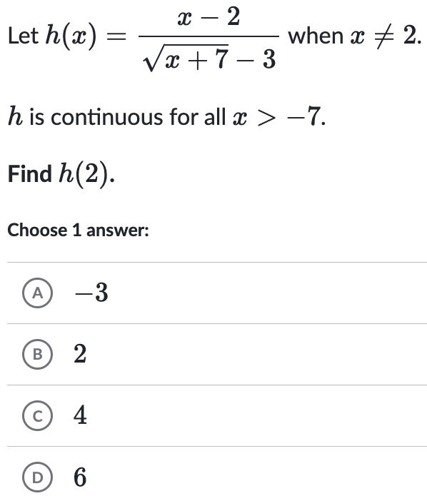
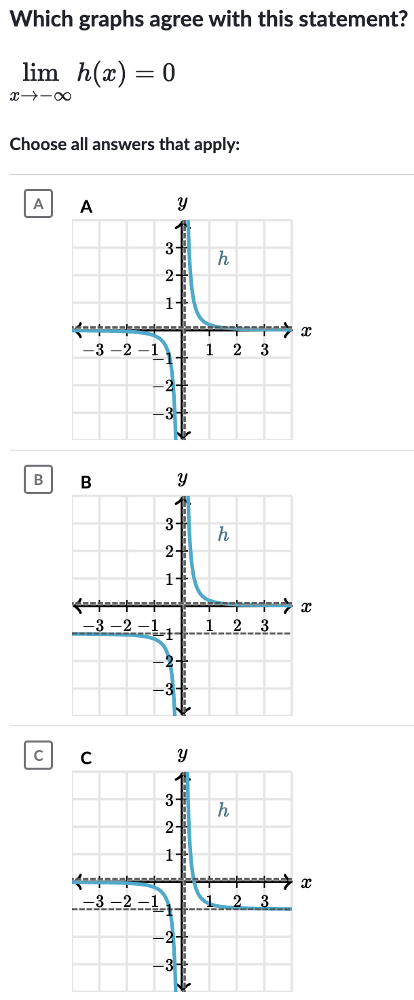

AP Calculus AB
Squeeze Theorem & Continuity
A presentation of examples.
The Squeeze Theorem
The Idea: If we have a tricky function whose limit is hard to find, we can "squeeze" it between two other, simpler functions. If both of those outer functions approach the same limit at a certain point, the function squeezed between them must also approach that same limit.
Metaphor: Imagine you're walking between two friends who are holding your hands. If both of your friends walk through a doorway, you have no choice but to walk through that same doorway with them.
Example: Squeeze Theorem
Types of Discontinuities
The Idea: A discontinuity is any place where a function has a break in its graph. We classify these breaks based on how the function behaves around them. The main types are removable (a hole), jump (a sudden leap), and infinite (a vertical asymptote).
Metaphor: Think of the function as a road. A **removable** discontinuity is a small pothole you can easily patch. A **jump** is like a drawbridge that's open, forcing you to teleport to the other side. An **infinite** discontinuity is a cliff where the road goes off to the sky or down into a canyon.
Examples: Types of Discontinuities

Continuity at a Point (Graphical)
The Idea: For a function to be continuous at a specific point, three things must be true: 1) The point must exist (the function is defined there), 2) The limit must exist as you approach the point, and 3) The point's value must equal the limit's value.
Metaphor: The function's graph is a path. To be continuous at a point, the path leading to a location (the limit) must take you to an actual, existing landmark (the defined point). You can't arrive at an empty lot.
Examples: Continuity at a Point


Continuity at a Point (Algebraic)
The Idea: We apply the same three-part definition of continuity, but with equations instead of graphs. For piecewise functions, this means checking if the limit from the left equals the limit from the right, and if that value equals the function's value at that exact point.
Metaphor: Two roads are merging. For the merge to be smooth (continuous), the cars from the left road and the right road must be heading to the exact same spot on the new road, and that spot must actually exist.
Examples: Algebraic Continuity
Continuity over an Interval
The Idea: A function is continuous over an interval if you can draw its graph over that entire stretch without lifting your pencil. This means there are no holes, jumps, or vertical asymptotes anywhere in that section of the graph.
Metaphor: It's like checking a section of a highway for drivability. The road is "continuous" over a 10-mile stretch if there are no potholes, open drawbridges, or cliffs anywhere in those 10 miles.
Examples: Continuity over an Interval
Continuity of Common Functions
The Idea: Many functions you're familiar with (like polynomials, sine, cosine, and exponential functions) are continuous everywhere. Others (like rational functions, logarithms, and tangent) are continuous everywhere they are defined, but you have to watch out for specific points where they are not.
Metaphor: Think of different types of transportation. A car (polynomial) can go on almost any road. A boat (logarithm) can only travel on water. A train (tangent) can only go where there are tracks. Each is "continuous" in its own valid environment.
Examples: Continuity of Common Functions
Infinite Limits
The Idea: An infinite limit occurs when the value of a function grows without bound as it approaches a certain x-value. This typically happens at a vertical asymptote. The limit can be positive infinity, negative infinity, or it might be different from the left and the right.
Metaphor: Imagine a powerful magnet located at the asymptote. As you get closer, your car (the function's value) is either powerfully repelled towards the sky (positive infinity) or powerfully attracted towards the ground (negative infinity).
Examples: Infinite Limits
Making a Function Continuous
The Idea: Sometimes a function has a removable discontinuity (a hole) because it's undefined at a single point. We can "fix" or "patch" this hole by defining a value for the function at that point that equals the limit. This makes the function continuous.
Metaphor: The function is a bridge with a single missing plank. To make it continuous (and safe to cross), you just need to find the right size plank (the limit) and put it in place (define the function's value).
Examples: Fixing Removable Discontinuities
Limits at Infinity (Graphical)
The Idea: We're looking at the end behavior of a function. What value does the function get closer and closer to as x gets infinitely large (or infinitely negative)? On a graph, this value is represented by a horizontal asymptote.
Metaphor: Imagine you're flying in a plane that just took off from the ground. As time passes and passes, your elevation above ground settles to a certain limiting value.
Examples: Graphical Limits at Infinity
Limits at Infinity (Algebraic)
The Idea: For rational functions, the limit at infinity is a battle between the highest power term in the numerator and the highest power term in the denominator. The "stronger" term dictates the end behavior. If they're equally strong, the limit is the ratio of their coefficients.
Metaphor: It's a tug-of-war. If the top team (numerator) is stronger, they pull the rope to infinity. If the bottom team (denominator) is stronger, they pull the rope to zero. If they're equally matched, they settle at a specific point (the ratio of coefficients).
Examples: Algebraic Limits at Infinity
Limits at Infinity with Square Roots
The Idea: This is a special case of algebraic limits at infinity. The key is to be careful when dealing with $\sqrt{x^2}$, which is $|x|$. This means it equals $x$ when $x \to \infty$, but becomes $-x$ when $x \to -\infty$. This sign change is crucial for finding the correct limit.
Metaphor: It's like the tug-of-war, but a key player on one team is wearing a disguise (the square root). You have to figure out their true identity, which might change depending on which direction they're pulling (positive or negative infinity).
Examples: Limits at Infinity with Square Roots
The Intermediate Value Theorem (IVT)
The Idea: If a function is continuous on a closed interval [a, b], it is guaranteed to take on every single y-value between f(a) and f(b). It cannot skip any values within that range. This is useful for proving that a solution or a root exists within an interval.
Metaphor: If you are driving from a town at 100 feet elevation to a town at 500 feet elevation, and you never leave the road (continuity), you must have passed through every single elevation in between (200 ft, 350 ft, 499 ft, etc.) at some point in your journey.
Examples: Using the Intermediate Value Theorem
Examples: Justifying with the Intermediate Value Theorem

End of Examples
Good luck!